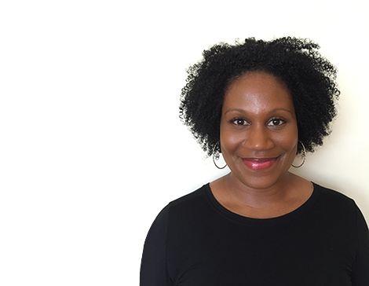

High School Administration
Michael Murphy, Principal
I am very excited to continue with a dynamic teaching and learning community in the high school this year. It is a pleasure to be working with such a capable and caring group of teachers who support our students through the journey of high school.
High school can be a challenging and exciting time for our students. Here at the American School we strive to help our students develop the confidence and skills to be successful long after they leave our school. To this end, we offer a diverse and dynamic curriculum carefully designed to engage each and every student and apply their learning to practical, real-life scenarios. Our goal is to produce learners ready to excel in American higher education.
As Principal, it is very important to me to cultivate positive relationships with our students and their families. Learning is an ongoing process that we are all engaged in, all the time. To be most successful in this process, we must work together and communicate openly. My door is always open to students and to parents if there are any concerns or thoughts to be shared and discussed.
Michael Murphy is from Moscow, Idaho, and has been at The American School of Kuwait for seven years. Joining our school in 2009 as a high school history teacher, Michael then moved to the middle school where he was Assistant Principal for two years. Before moving to Kuwait, Michael worked for the University of Idaho in the College of Education. Michael has been working in the field of education for ten years. During his free time, he enjoys traveling, spending time with his family and golfing.
Jacqueline Thomas, Assistant Principal
Welcome to ASK High School - it’s an exciting, engaging, and passionate community, and one I am so happy to be a part of!
High school can be an overwhelming experience, but one of the greatest benefits to working at, or attending, ASK is the privilege to work and learn alongside our many talented and dedicated educators, who bring such a high level of expertise and enthusiasm to their teaching. Our faculty do an amazing job of working with parents, administration, and support staff in order to facilitate a high level of learning at all times, and I am excited to do my part to ensure this continues.
As assistant principal, I truly believe in the importance of valuing each student’s individuality, leading through compassion and understanding, and developing the whole person, through classes, activities, sports, and outside interests. Throughout this year, I will strive to maintain open communication with students, parents, and teachers and to assist our community in its pursuit of excellence - ensuring all students are academically challenged, fully supported, and offered a variety of opportunities to help them succeed both in high school and in their bright future.
Jacqueline Thomas is from Northern California, and has been at the American School of Kuwait for five years. In her time at ASK, she has served as both a social studies and language arts teacher, as well as a middle/high school literacy coach. Previous to ASK, Jackie worked in Honduras as a literacy coach and in Northern California as a teacher and assistant principal. This will be her thirteenth year as an educator. During her free time, she loves to snowboard, read voraciously, and make memories with friends and family.
Lena Hakim, College Counselor
Welcome to a new and exciting school year at ASK! I am thrilled to be working with our juniors and seniors this year and I hope I will be able to offer them as much assistance and guidance as possible in their journey to college. My door is always open to parents and students alike and I am happy to try and answer all your questions, making college preparation and the college application process stress-free.
Lena Hakim has been at ASK since 2005 and joined the Counseling department in January 2013 as the College and Guidance Counselor. Lena graduated with a Bachelor Degree in Political Science and International Relations. She has recently completed her Certificate in General Counseling and has currently completed her Diploma in Youth Counseling. In her spare time, Lena enjoys reading, travelling as well as spending time with family and friends.

Cassandra Hazel, Guidance Counselor
As the high school counselor, I am looking forward to advocating for and assisting our freshman and sophomores through their high school journey here at ASK. I am here to assist our students with their academic goals while also helping them with their social and personal development. High school is a crucial turning point for students and it is my goal to encourage and empower ASK students towards greatness and success.
Cassandra Hazel has received a Bachelor of Science degree in Psychology from Liberty University as well as a Master of Science degree in Mental Health Counseling from Nova Southeastern University. She has eight years experience working as a Counselor and Academic Advisor in both secondary and post secondary education.